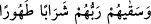

nûrunun yansıması için gerekli saflık ve duruluk bu içki ile meydana gelecektir. İşte bu
duruluk, sıddîk olan insanların yükselebilecekleri mertebelerin en üst sınırıdır. Bu
nedenle ebrâr’ın sevaplarını konu alan ilâhî sözler, bu “/Rableri
onlara tertemiz ve temizleyici bir içki içirmiştir” ifâdeleri ile noktalanmıştır.
“Temizleyici” şeklinde tercüme edilen “tahûran” kelimesi, ism-i fâil kipinin
mubalağalısıdır. Mânâsı; “çok temizleyici” demektir. Bâzılarına göre bu, “tâhir/temiz”
kelimesinin mubalağalısıdır. Buna göre bu içki, dünyadaki şaraplar gibi necis değil çok
temiz olacaktır. Buna, dünya şarabı elde edilirken olduğu gibi pis eller ve iğrenç
ayaklar değmemiştir. Sonra içildiğinde insanın bedeninde necis hâle de gelmez. Tam
tersine bu içkiyi içen kimsenin bedeninden misk kokusu gibi güzel kokular yükselir.
Kâşifî şöyle demiştir: Bilmek gerekir ki cennette Kevser ırmağı sâdece Hz.
Peygamber (s.a.)’e mahsustur. Bunun açıklaması Kevser Sûresi’nde yapılacaktır. Diğer
dördü, yâni su, süt, şarap ve bal ırmakları müttakîler içindir. Bunların özelliklerine dâir
az bir bilgi Muhammed Sûresi’nde beyân edilmişti. Bunlardan iki çeşme haşyet ehli, iki
çeşme ise yemîn ehli içindir. Bu dört çeşme Rahmân Sûresi’nde gelmiştir. Bunlardan
diğer “Rahîk Çeşmesi” ebrâr, “Tesnîm Çeşmesi” ise mukarrebler içindir. Bu her iki
çeşme Mutaffifîn Sûresi’nde zikredilmiştir. Selsebil denilen Kâfûr ve Zencebîl adlı iki
çeşme ehl-i beyt içindir. Şarâb-ı tahûr bunlardan akar ve muhakkikler ona şarâb-ı şuhûd
adını verirler. Bu şaraptan içenlerin gönül aynaları kıdem nurlarının parıltılarıyla
aydınlanır. Ezel ve ebed nakış akisleri onun hâlini ve vaktini öyle saflaştırır ki vahdet
yolunda yabancılık kirliliği mutlaka ortadan kalkar. İkilik rengini, şarap kadehinde
olduğu gibi tek renge tebdil ederler.
Tamamıyla kadehtir, sanki şarap yoktur
Ya da bütünüyle şaraptır, sanki kadeh yoktur.
Âriflerden birisi demiştir ki, yarın dâr-ı bakâ meclisinde oturanlar şarâb-ı tahûrun
lezzetini tatmak isterler. Oysa bugün Allah’ın fazlının meyhanesinden bâde içenlere, o
gün verilecek payları burada peşinen verilmiştir.
“Rableri içirir” âyetinden anla ki bütün (ebrâr) iyiler mesttir
Lâ Yezâlin cemâlinden yedi, beş (ehl-i beyt) ve dört (hâlife) mesttir.
Ey civanmerd, bu öyle bir şaraptır ki gayb eli onu gönül kadehine döker ve ârif onu
içer. Bir topluluğu şarap, bir diğer topluluğu ise Hakk’ın dîdârı mest etmiştir.
Büyüklerden birisine rüyasında Mârûf Kerhî (rh.)’in arşın çevresinde tavaf ettiğini
gösterdiler. Rabbü’l-İzzet meleklerine “onu tanıdınız mı?” diye sordu. Onlar “hayır,
tanımadık” dediler. Allah “o Mârûf Kerhî’dir, bizim muhabbetimizle sarhoş olmuştur.
Bakışını bize çevirmeyiniz de uyanmasın, aklı başına gelmesin. Bugün muhabbet şarabı
olmayana yarın şarab-ı tahûr da yoktur.” dedi.